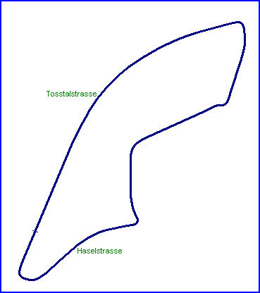

| Length | 0.994 Miles // 1.600 km |
| Direction | Anticlockwise |
Contact Information |
|
| Address |
MSC Hittnau Kurt Spörri Adetswilerstrasse 35 8345 Adetswil |
| Telephone | |
| Website | http://www.oldtimerclassic.ch |
Hittnau
Historics Street Circuit

| Length | 0.994 Miles // 1.600 km |
| Direction | Anticlockwise |
Contact Information |
|
| Address |
MSC Hittnau Kurt Spörri Adetswilerstrasse 35 8345 Adetswil |
| Telephone | |
| Website | http://www.oldtimerclassic.ch |
racingcircuits.net - Lasted Updated: 30 July 2004 15:01:21 GMT Daylight Time
Data
Sources
Website - "Oldtimerclassic of Speed, Hittnau";
http://www.oldtimerclassic.ch
email - from Martin Berrang on Wed 28/07/04 10:06